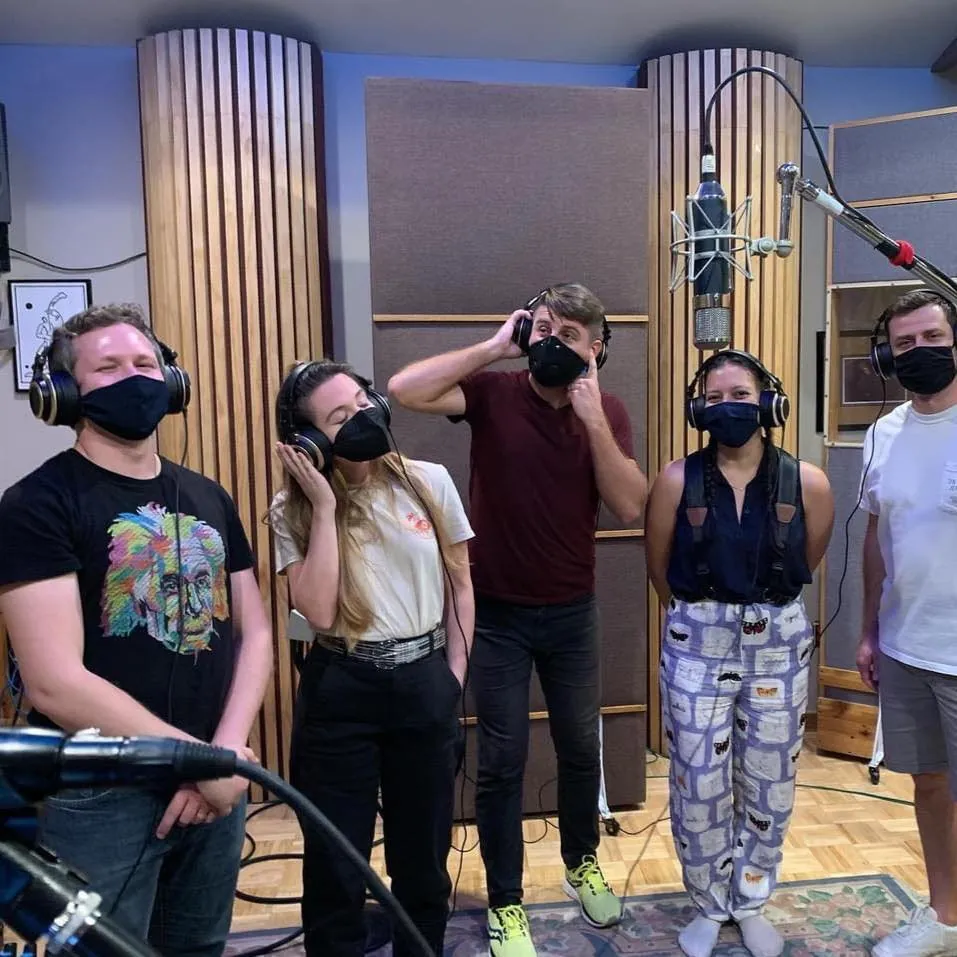
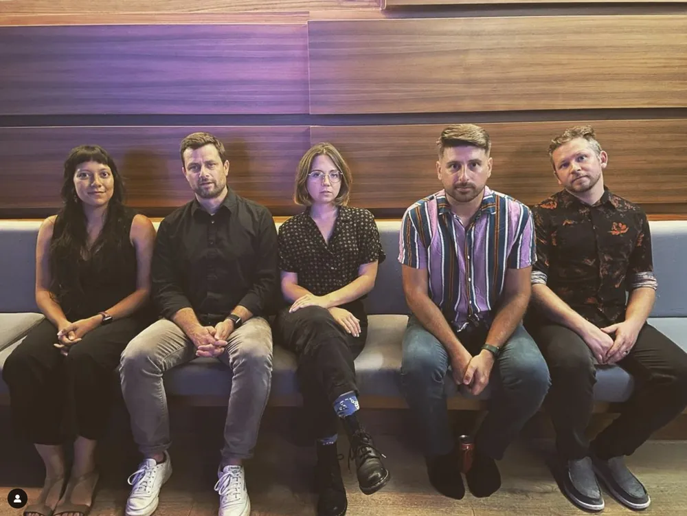
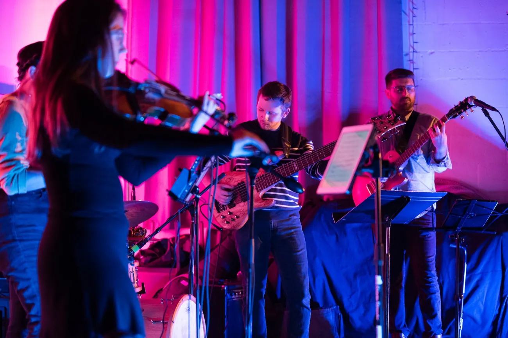

Press
What People Are Saying
“This is music out on the frontier, work of true originality that furthers Answers’ legacy as one of the most purely artistic groups in modern Orlando music.”
“They rock, they reel, they're a bit surreal. Cinematic music for your cerebellum.”
Who we are
Answers is a quintet of improvising composers. Equally at home in amplified and acoustic settings, the band performs spontaneous improvisations, original works, interpretations of graphic scores, virtuosic contemporary classical music, and works for open instrumentation. Answers is on a mission to perform without limitations.
"Answers are an all-star cast of young Orlando mavericks." - Orlando Weekly
…”a valuable masterclass in balancing chamber prog and post-rock within the modern classical framework.” - Grotesqualizer
“ANSWERS… offers grandeur and whimsy at every surprising turn.” - American Pancake


Crown Shyness
“If you look up toward certain types of towering trees—including eucalyptus, Sitka spruce, and Japanese larch—you may notice a unique phenomenon: the uppermost branches don’t touch. Known as ‘crown shyness,’ this natural occurrence results in rupture-like patterns in the forest canopy that seem to perfectly outline the trees’ striking silhouettes.”
– My Modern Met
Composed by Brandon Miller
Video credit: Andrew Chadwick, Brandon Chang, Heartwood Sound Stage
Biographies
Short bio
ANSWERS is a quintet of improvising composers. Equally at home in amplified and acoustic settings, the band performs spontaneous improvisations, original works, interpretations of graphic scores, virtuosic contemporary classical music, and works for open instrumentation. ANSWERS is on a mission to perform without limitations.
Medium bio
ANSWERS is a quintet of improvising composers. Equally at home in amplified and acoustic settings, the band performs spontaneous improvisations, original works, interpretations of graphic scores, virtuosic contemporary classical music, and works for open instrumentation. ANSWERS is on a mission to perform without limitations.
ANSWERS formed in 2018 as an outlet for the five performer-composers in the group to play original music and free improvisations. The band held a monthly residency at Iron Cow in 2018 and 2019, which ended when violinist Caitlin Pequignot relocated from Orlando to San Francisco. ANSWERS began working on music remotely, releasing the ENDEVOLVE single in early 2020. Shortly thereafter, the band commissioned bassist Brandon Miller to compose a piece showcasing their ensemble playing as well as their brand of collective improvisation. The result is the band's first studio album, A New Path to Touch the Earth, produced by ANSWERS and recorded in one day at Phat Planet studios in Orlando, Fl. The work's three movements alternate between precisely notated structural sections and freely improvised responses, all of which were first takes recorded live in the studio without overdubs, while the music was extremely fresh under the band's fingers. John McEntire (Tortoise, The Sea and Cake, et al) was engaged to mix and master the record, which elevated the album to even greater heights.
Long bio
“A new addition to the annals of great music from the Sunshine State… This debut is a welcome treat to anyone who's enjoyed their live shows over the past few years. They rock, they reel, they're a bit surreal. Cinematic music for your cerebellum.”
- Kyle Eagle, The Major Scale
ANSWERS is a quintet of improvising composers. Equally at home in amplified and acoustic settings, the band performs spontaneous improvisations, original works, interpretations of graphic scores, virtuosic contemporary classical music, and works for open instrumentation. ANSWERS is on a mission to perform without limitations.
ANSWERS formed in 2018 as an outlet for the five performer-composers in the group to play original music and free improvisations. The band held a monthly residency at Iron Cow in 2018 and 2019, which ended when violinist Caitlin Pequignot relocated from Orlando to San Francisco. ANSWERS began working on music remotely, releasing the ENDEVOLVE single in early 2020. Shortly thereafter, the band commissioned bassist Brandon Miller to compose a piece showcasing their ensemble playing as well as their brand of collective improvisation. The result is the band's first studio album, A New Path to Touch the Earth, produced by ANSWERS and recorded in one day at Phat Planet studios in Orlando, Fl. The work's three movements alternate between precisely notated structural sections and freely improvised responses, all of which were first takes recorded live in the studio without overdubs, while the music was extremely fresh under the band's fingers. John McEntire (Tortoise, The Sea and Cake, et al) was engaged to mix and master the record, which elevated the album to even greater heights.